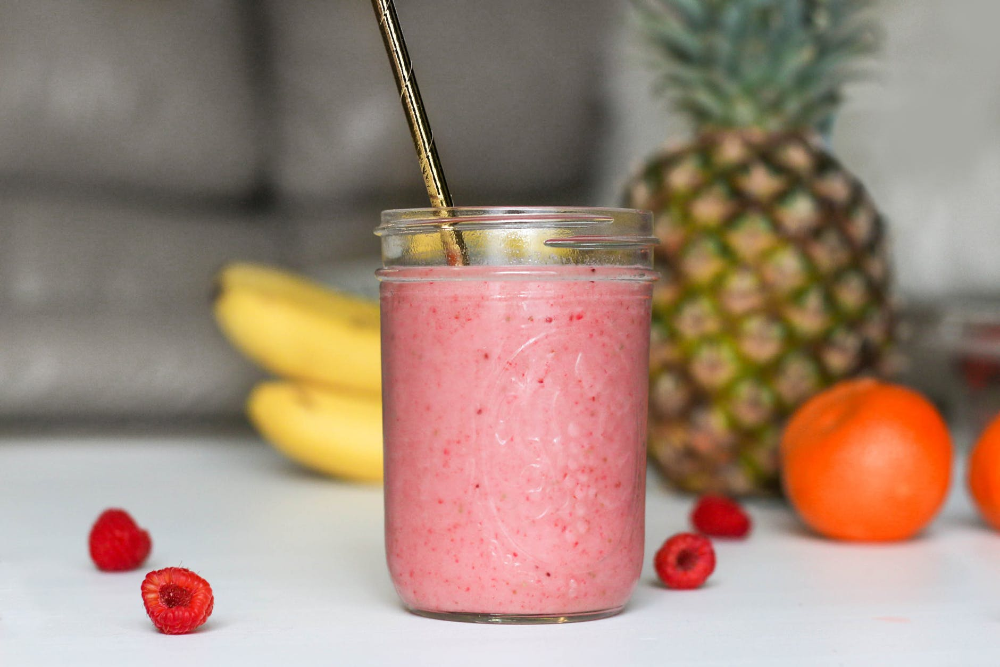
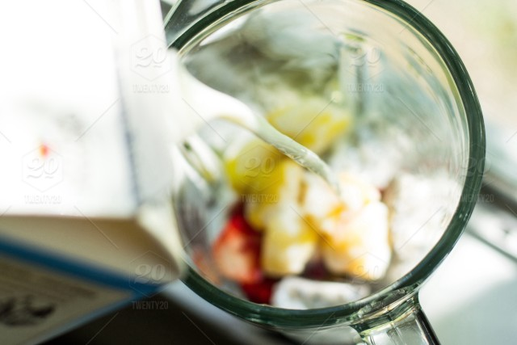

Smoothie of the Month:
Strawberry Banana
A classic fan favorite, you'd think a strawberry banana smoothie would be pretty self-explanatory. Just strawberries and bananas, right? Well, Smoothie World, as always, does things a little differently. We put a little something special in our Strawberry Banana concoction (not just love -- although that's important). Below we'll list the ingredients and a short video detailing how to put it all together.
- Gather your ingredients
For this smoothie you'll need the basics to start: a cup of strawberries, a cup of sliced bananas(no peels!), and our secret ingredient.. Honey! We believe adding honey and a pinch of sea salt helps create a sweet and salty flavor to the smoothie. Don't forget the ice and milk of course.
- Blend
Add the ingredients to your blender, and blend on high for 30 seconds. Then switch to pulse for 30 more seconds. After blending, test the consistency and add milk or ice as needed.
One of our own chefs outlines these steps in a basic tutorial video below. Check it out!